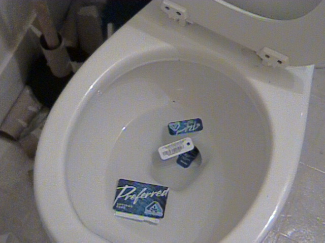

Just Flush The YAC (Yet Another Card.)
Say No To The Albertsons New Preferred Shopper Card.
I'm going to start shopping somewhere else even though Albertsons was the closest and cheapest choice for me. Too bad to loose more business.
More Resources :See :
 CASPIAN - Consumers Against Supermarket Privacy Invasion and Numbering http://www.nocards.org/
CASPIAN - Consumers Against Supermarket Privacy Invasion and Numbering http://www.nocards.org/
See : No Cards Shoppers http://www.amadorbooks.com/nocards.htm
No Cards Shoppers http://www.amadorbooks.com/nocards.htm